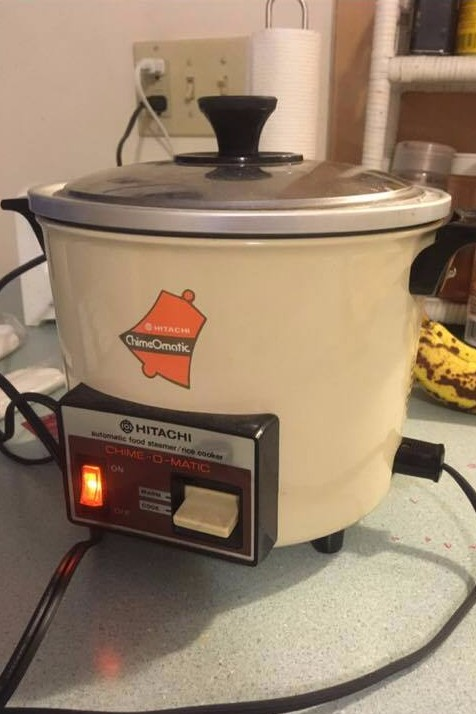

2017-08-15 Twitter feed update
10 days since our last update! Goodness time flies. Last update I did but not mentioned are the Twitter feed on the index/home page. The information provided from @TwitterDev worked, just needed some additional CSS comment (thanks to @UM_CEE for the help.)
In short, the index is now fitted with feed from Twitter, and the office space has since been cleaned, as shown below.

Other than that, things are more or less the same. I am talking more on DnD these days, and I am actually looking forward to playing the game now. The book is scheduled to arrive tomorrow. Can't wait!
Job search is continuing as usual. Like the discussion with someone else, it is like a relationship, it's either a 1 (get hired) or 0 (nothing yet). Some cognitive learning about myself also helped in reviewing the resume and navigating the job search.
It was unfortunately that one of the interviewer was looking for app developer (doesn't line up with my skillset, yet.) But since we're done with Linear Algebra and reaching the last quarter of Statistical Hydrology (13/16). Let us begin machine learning from Coursera (note the use of buzzword! good for proposal writing!)
This past Sunday roommate A and I went to Northampton (aka NOHO, but known to locals as Hampshire) for food and scouted for place to impress before an important people join us next week.
After food, we walked around and talked about recent events and was interrupted by some nearby noice around city hall. It turns out this was a gathering for the Virginia event that happened the day before (I was surprised at how fast the organizing team got things in place. Though I think it was a surprised to the police.)
We left the demonstration because roommate A said he wanted to try another book. Unfortunately the bookstore had closed at this moment, but we started an interesting conversation about books. Let me leave my book conversation for next time. Meanwhile, please asnwer this question: What is your one favorite color? Mine is red.
God Red! Go Blue!
- Ho-Zhen [2017-08-15]
2017-08-05 Postcard from Bangladesh
Now that the days with Linear Algebra forward process is done, I am now working my way backward to the start. And statistical hydrology is still progressing and I think the next thing to look up right now is command for residual plot in R and other software program.
Something I found interesting is the recent progress on D&D (Dungeons & Dragons ) game play. I like it. From watching Day9.tv the advice on D&D is to say the first thing that comes to mind, I think I am still a little hesitatant on that front. Something to work on from all the reading that I have done. I also like D&D because for me it shows that the only thing one need in order to have fun are friends and imagination. The story doesn't play itself, it evolves from player input.
Recent reading have been on Engineering Education (ASEE) with a focus on global competencies and social justice (few hydrology and climate change papers.) I think even though my background highly identifies with global experience. I am more interested in cognitive learning and knowing. But that may be subject to change. I just like to be aware and conscious about things happening.
I rode to the bridge and back yesterday afternoon. Pictures and stories about the bike trail for another time. For now I want to share a postcard from a good Panda who is currently conducting work in Bangladesh. Postcard in 2017? I think that is a sign of a good Panda friend.
Panda!
- Ho-Zhen [2017-08-05]
Jul-25-2017 Weighted Least Square (WLS)
Here's a picture of my study progress? Their topics happen to line up on the same day.. Coincidence?
Building up to today's reading. Things were kind of lining up so one can kind of have an idea of what tomorrow is going to bring. But I just didn't expect the two to line up on the same day.
Weighted Least Square (WLS) in short, can be thought of as imaginary gird scale change (squares, from my understanding.) Error for a regression line is calculated as the measured distance between actual data points from the predicted data points (the regression line.) For some cases, however, not all measurements are created equal. As a result, errors are assigned different weights before they are summed for the entire line, thus the name weighted least square (WLS).

Another picture of happiness is the Hitachi steamer. It can be used to cook rice and all the other stuff. The steamer is tested and good for rice. The inside sticker also mentioned for safety (and convenience) cook using a removable container (so the cleaning is easier.) Very happy with the new toy and the cumulative time it will save moving forward.
Another thought before we go. Since I am no longer affiliated with UMass. Time for new cards? What about just a line with the URL to this site?
To all the pandas out there,
- Ho-Zhen [2017-07-25]
Jul-21-2017 Self-Search and content creation.
As I enter the job search progress, it occur that this will be a good time to restart this section as I move forward in tallying what I have accomplished and perhaps do some reflection on life.
Here a list of what a normal day look like recently.
1.) Job search
2.) reading Linear Algebra (David C. Lay)
3.) reading Statistical Methods in Water Resources (Robert Hirsch)
4.) read another paper
The first three came along this summer and the last one is the new resolution this year. The motivation for it shall be discuss later. I love this paper thing and it is awesome!
One question that I was forced to reflect upon this summer was the initial intention on pursuing a graduate degree, and this has always been to teach STEM at the college level. From a recent conference learning and some discussion with specialist in this field, it seem that education, not engineering, will be the key to getting me there. So the reading has change from climate change to engineering education (more on that later.)
Since both our attention span has reached its limit, here's a picture for distraction. Picutre is of Amherst Coffee
taken from the Jones Library on a summer afternoon.
And congratulations on a former colleague's accomplishment. Congratulations on Cynthia Castro's doctoral defense.
Until next time.
- Ho-Zhen [2017-07-23]
Feb-19-2017 First post. AGU 2017 Fall Meeting
Just finished today's assign reading and wanted to update GitHub website thing.
Here's a picture of Colin and I with my poster at the 2017 American Geophysical Union (AGU) Fall meeting.

I had a good time at AGU seeing all the mythical authors previously exists only in Web of Science in person, as well as meeting the family. I think it was just a good feeling knowing how our work fits into the larger picture. Surface Water Ocean Topography (SWOT) Mission, different groups that are also study the cryosphere in different ways, and other hydrology work going on elsewhere. It is good knowing we're not alone :)
- Ho-Zhen [2017-02-19]